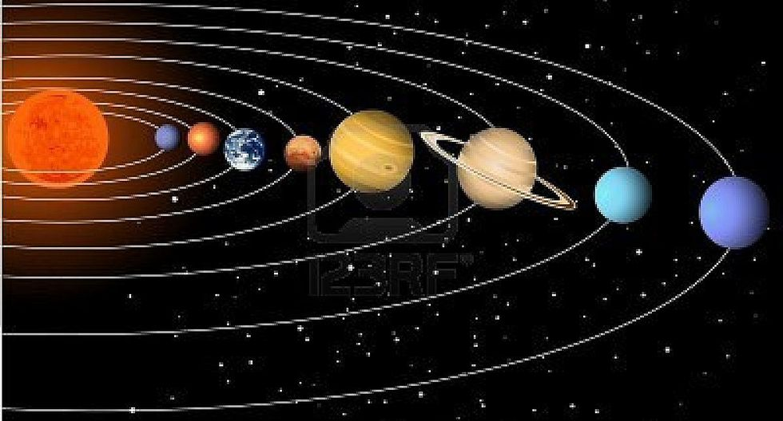

Un sistema planetario (también llamado en ocasiones sistema solar1) está formado por una estrella central o varias (sistema estelar), y distintos objetos orbitando a su alrededor. Nuestro sistema planetario, el sistema solar, está formado por el Sol, los diferentes planetas y una multitud de cuerpos menores. Se conocen más de 2900 estrellas a cuyo alrededor orbita por lo menos un planeta. Se cree que los sistemas planetarios alrededor de estrellas de tipo solar se forman como parte del mismo proceso de la formación estelar. La mayoría de las teorías antiguas eran de tipo catastrofista e involucraban el paso de una estrella muy cerca del sol capaz de extraer material de este por medio de su gravedad y colapsar más tarde formando los planetas. Sin embargo la probabilidad de un evento de este tipo es tan reducida que implicaría una gran escasez de sistemas planetarios en la galaxia. Las teorías modernas indican que los planetas se formaron a partir de un disco de acrecimiento. En el caso del sistema solar este se habría formado a partir de la nebulosa solar.

Algunos sistemas planetarios son muy distintos del nuestro, como los sistemas de planetas alrededor de púlsares detectados a partir de las ligeras variaciones en los pulsos de radiación electromagnética de estos cuerpos. Los púlsares se forman en violentas explosiones de supernovas por lo que un sistema planetario convencional no podría sobrevivir a dicha explosión, los planetas se evaporarían o escaparían de la atracción gravitacional de la estrella central. Algunas teorías indican que los compañeros estelares existentes cerca de la supernova evaporarían la mayor parte de su masa dejando cuerpos de tamaño planetario. Alternativamente los planetas podrían formarse en un disco de acrecimiento rodeando los púlsares y formado por el material expulsado de la estrella.